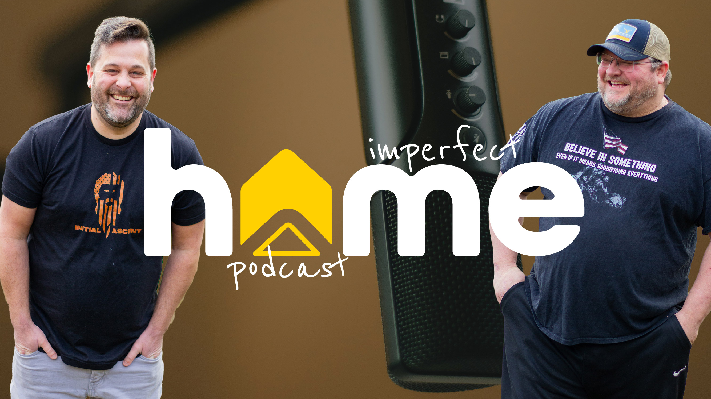
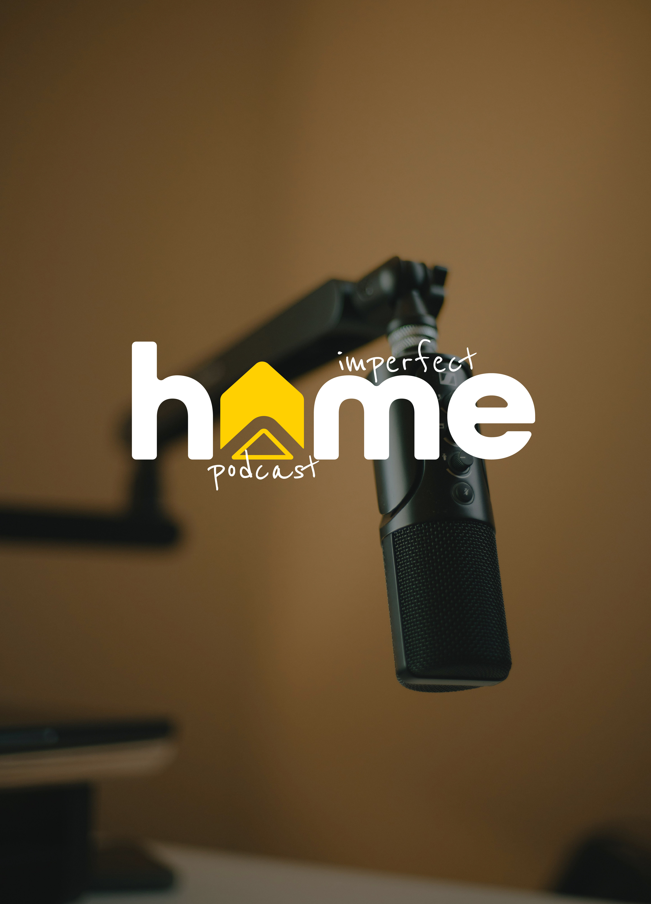
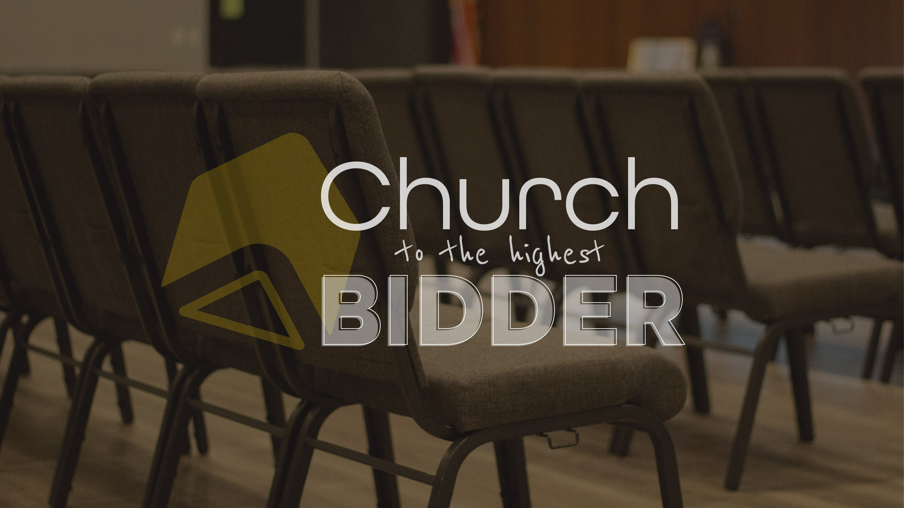

The goal? To create a brand that communicates a "home away from home" for people who cannot find community and belonging in church. If you have ever felt hurt by church, or simply that you just don't feel like you fit in... here are two people who are trying to build the next "Home Church."
Bring your troubles and set them down! You're in a safe space to "do church."
Visually, we need to communicate:





Without being too cliché, I tried to think of how to incorporate the simple symbol of a home into this branding.
For this specific brand, I really like how arrows are symbolic of upward movement, lifting, and positivity. This is what this brand is all about.
I found a way to include an arrow in a "Home" icon. I chose yellow because at it's core, yellow is joyous, happy, and cheerful.
All Round Gothic is a fairly common font for the letters of "Home" but it's readable, rounded, and modern to compliment the new icon.


This is a podcast to start. Because audio podcasts are quite saturated and it's a tad bit harder to get going, I advised a video podcast on YouTube may be a great option for these guys.
They were worried about being on video, and I encouraged them to do it scared. How many people could they help with this amazing idea? Just get started.
They sat down and recorded their first episode together. It was about 25 minutes long. I minimally edited this to upload as their first video. Then, I took the episode and made three short-form style videos using pieces of the full-length epsiode to create some interest for viewers to watch.
This project is still ongoing. To check out this podcast, click here.